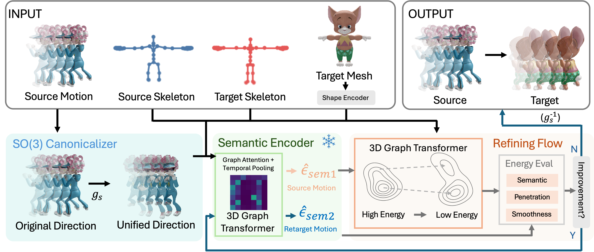

0.129
Penetration ↓
Best penetration among learning-based retargeting methods.
Computer Animation · Motion Retargeting
Retargeting with Energy Flow and Motion Semantics
A source-mesh-agnostic framework that produces semantically faithful, penetration-aware, temporally smooth character motion.
Replace this area with a project video or an animated qualitative comparison.
Overview
ReFM reformulates motion retargeting as a progressive refinement process inspired by how animators work: starting from an initial retargeted motion, it iteratively corrects target-specific artifacts rather than directly regressing a final motion in one shot. Throughout refinement, preserving the semantic intent of the source motion remains the primary objective. A cross-character semantic encoder provides explicit semantic guidance, while target-aware physical and temporal constraints reduce self-penetration and motion artifacts with minimal modification to the initialization. ReFM requires only the source motion and skeleton together with the target skeleton and mesh, without requiring a source mesh or ground-truth target motion.
Contributions
Inference needs source motion and skeleton plus the target skeleton and mesh—without source geometry or target ground truth.
A frozen contrastive graph-transformer encoder for preserving character-invariant motion semantics.
Rather than generating from a one-step regression, ReFM refines a coarse retargeted motion progressively under the energy-guided trajectory, pushing the data to the low-energy domain.
Method
Three complementary stages deliver geometry-aware motion while retaining its original intent.
Analytically removes global yaw to normalize input motion without learned parameters.
Maps motion to a 128-dimensional, character-invariant representation using contrastive learning.
Refines the copy retarget by descending penetration, semantic, and temporal energies.

Evaluation
Mixamo GT benchmark in the ReFM-native, height-normalized 65-joint space.
0.129
Penetration ↓
Best penetration among learning-based retargeting methods.
0.145
MSE ↓
Best motion reconstruction error among learning-based methods.
0.998
Semantic similarity ↑
Best semantic similarity, tied with STaR, among learning-based methods.
| Method | Pen ↓ | Semsim ↑ | Curv ↓ | MSE ↓ |
|---|---|---|---|---|
| Reference motions | ||||
| Ground truth | 0.140 | — | 0.675 | — |
| Naive copy baseline | 0.139 | — | 0.657 | 0.131 |
| HumanIK | 0.139 | — | 0.657 | 0.130 |
| Skinned retargeting methods | ||||
| STaR | 0.135 | 0.998 | 0.705 | 0.147 |
| MeshRet | 0.135 | 0.980 | 0.710 | 0.166 |
| Skin-agnostic retargeting methods | ||||
| SAN | 0.134 | 0.953 | 1.494 | 0.211 |
| R2ET | 0.134 | 0.996 | 0.852 | 0.152 |
| Ours: skin-agnostic refinement | ||||
| ReFM-copy | 0.129 | 0.996 | 0.732 | 0.145 |
| ReFM-HumanIK | 0.129 | 0.998 | 0.718 | 0.146 |
Pen: self-penetration; Semsim: semantic similarity; Curv: temporal curvature; MSE: motion reconstruction error. Lower is better for Pen, Curv, and MSE; higher is better for Semsim. Bold marks the best result among learning-based retargeting methods. Semsim is omitted for reference motions (Ground truth, Naive copy, HumanIK), which keep nearly identical rotational quaternions to the source (Semsim → 1) while ignoring other constraints such as physical plausibility.
Training data
Qualitative results
Source, ground truth, baseline methods, and ReFM refinements, on Mixamo (Body Jab Cross, Dribble) and ScanRet.
Citation
A ReFM paper and public project links will be added when available. The current implementation builds on STaR.